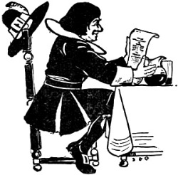

The student of Scots dialect will not always find the quoted vernacular running through the text quite pure, many words having been unconsciously modified by a too free use of phonetic spelling.
A
Adder-stane, the adder-bead charm.
Adowe, stir.
Airless, heirless.
Airt, direction.
Anon, immediately, thereupon.
Ask, newt.
Ava, at all.
Awsomly, in fear.
B
Backgane, not thriving, wasting.
Bags, entrails.
Bayillis, bailies.
Bees Bizin’, noises in the head caused by alcohol.
Beldam, an old woman.
Beltane, the festival of May first.
Bek, bake.
Benison, prognostication for good.
Benshee, a banshee or fairy, really an Irish fairy.
Berry, thresh.
Besome, broom.
“Best Aucht,” the most valuable possession, usually a horse or ox, claimed by the superior on the death of a farm tenant.
Bickering, moving noisily.
Bien, prosperous.
Biggit, built.
Binwud, ivy.
Black-Spauld (Spaul), a pleuritic disease of cattle.
Blew Spot, a significant witch-mark also another term for “dede-nip.”
Blinmens’ Baws, common puff-ball (devil’s snuff-box).
Blinking, attractive, comely.
Bluidy-fingers, foxglove.
Bogle-bo, hobgoblin.
Boor-tree, elder-tree.
Bowcail, cabbage.
Bowte, to strike against.
Brattle, a clattering sound.
Breckan, bracken.
Breers, briars
“Brocken,” the important mediæval place of witch festival in Germany (see Faust).
Brose, pease-meal mixed with boiling water.
Bumbee, humble-bee.
Butter-skep, butter-basket.
Byke, a wasp’s or bee’s nest.
C
“Ca cuttie ca,” called upon to eat freely, even greedily.
“Cannie Moment,” significant time.
Cantie, canty, contentedly.
Cantrip, charm or spell.
Cap, caup, a wooden bowl.
Carle, a man.
Certes, certainly.
Champit, bruised.
Channel-stane, curling-stone.
Chessel, the tub for pressing cheese.
Chicken-wort, chicken-weed.
Chist (Kist), a wooden box.
Chowed, chewed.
Clowt, cloth.
Cog, a wooden domestic vessel.
Cogfu’, the full of such a vessel.
Compeared, appeared.
Coupe, to empty or capsize.
Couters, thick mucous secretion.
Couthie, in rude comfort.
Cower, to bend down.
Cowes, bushes, more particularly of the broom.
Cowsherne, cow-dung.
Craft, croft or field.
Crone, hag, old woman.
Crousely, proudly.
“Crummie,” a term for cows with usually crooked horns.
Crune, a murmuring sound, sometimes threatening.
Cruppen, contracted.
D
Dead-beli, See text, pages 210 to 213.
Dede-chack, See text, pages 210 to 213.
Dede-drap, See text, pages 210 to 213.
Deid-licht, See text, pages 210 to 213.
Dede-nip, See text, pages 210 to 213.
Dede-spall, See text, pages 210 to 213.
Dede-speal, See text, pages 210 to 213.
Dead-watch, See text, pages 210 to 213.
Deil’s Milk, milky sap.
Dempster, judge.
Deeray, disorder.
Divination, conjuration.
Dome, doom.
Donnert, stupid.
Door (Dour) here used (page 59) in the sense of sour or astringent.
Drabbled, slobbered.
Drubbing, thrashing.
Drugget, coarse woollen cloth.
Drumlie, thick.
Dwined, pined away or wasted.
E
Een, eyes.
“Effigies Clericorum,” a mock poem on the clergie when they met to consult about taking the Test in the year 1681 (printed A.D. MDCXVII.).
Elfin, fairy.
Esheite, forfeited.
F
Fald, fold.
Farintosh, whisky.
Fash, trouble.
Fearie, used here (page 203) in the sense of fearless.
Feat, tidy.
Feats, clever doings.
Fecket, under-jacket.
Fen, to strive hard for the means of livelihood.
Fey, a small field or croft.
Fient, no one at all.
Firsle, to rustle.
Fleyed, frightened.
Flutterbaws, puff-balls (see blinmens’ baws).
Foggy, mossy.
Forfochten, exhausted.
Fowk, people.
Frenziet, eccentric, mad.
Fumart, pole-cat.
G
Gall, bile.
Gars, makes or compels.
Gaur, to compel.
Gellocks, earwigs.
Girn, girning, whining, or fretting.
Glamour, bewitchment.
Gled, kite.
Glented, sparkled, gleamed.
Glower, to gaze intently.
Gowan, mountain daisy.
Gowk’s Spittles, plant froth (discharged by an insect, Cicada).
Greets, cries or weeps.
Grinwan, a noose of horse-hair attached to a stick or rod.
Grun, ground, referring to the grinding of grain.
Gyre-carline, a mother-witch.
H
Haed, possessed.
“Haggert wee granum,” a rather ragged small old woman.
Hag-ridden, bewitched (lit., ridden by a witch).
Hald, hall.
Hale, well, in good health.
Hallow-eve, the night before All-Hallow.
Halve, a hand-fishing net on a wooden frame.
Hannie, suitable, a fitting time.
Hantle, much.
Haurned, roasted.
Haurpan, brain-pan or skull.
Hawcket, probably finely chopped.
Haws, fruit of the hawthorn.
Herezeld, the best beast on the land, given to the landlord on the death of a farm tenant.
Heriot, the fine exacted by the superior on the death of a tenant.
Herrie, confiscate.
Heugh, a small height or eminence.
Hip o’, shoulder or edge of.
Hinnie-suckles, honeysuckle.
Hoose-riggin’, roof.
Hooves, abdomen, (lit., swollen by gaseous distension).
Howe, depth.
Houk, to dig up.
Howlet, an owl.
Hows, house.
Hynt, caught up.
I
Ilk, the same name.
Ill e’e, evil eye.
J
Jimp, neat and slender.
Jow, ringing of a bell.
K
Kain, rent or exchange in kind.
“Kelly,” Satan, Old Nick.
Kep Skaith, avert evil.
Keppit, caught.
Kilted, tucked up.
Kimmer, witch-wife or “gossip.”
Knag, keg, or wooden vessel.
“Knock the Big,” to hull the barley.
Kow, a goblin.
Kye, cows or oxen.
L
Lair, quagmire, to entice into a quagmire.
Lammastide, August, beginning of.
Lave, remainder.
Lift, vault of the heavens.
Lingle, leather-thong.
Lochen, small loch or tarn.
Loofie, fingerless glove.
Loupes, jumps.
Louring, lowering of clouds.
Louthe, abundance.
Lowne, silent, still.
Lowse, loosen.
Lugs, ears.
M
Malefices, offences.
Malison, prognostication for evil.
Mart, a fattened ox (killed at Martinmas for winter use).
Maun, must.
Maut, meal.
Meal-ark, meal chest.
Meall, male.
Meikle, much.
Meil, meal.
Mettle, with spirit.
“Milked the Tether,” extracted the milk by witchcraft through the halter.
Minnie, mother.
Mools, earth or soil.
Mort-Cloth, funeral pall.
Mou’, mouth.
Muir-ill, a disease specially affecting black cattle.
N
Naig, riding-horse or nag.
Napple-roots, heath peas.
Neers, kidneys.
Neist, nearest or next.
Nettle-stingers, nettle leaves.
Nieve, hand or fist.
Nob, nose, also boat’s prow.
Nool-shearings, horn parings.
Nowt, oxen (a corrupt form is noat).
O
O’erswak, sound of breakers.
Onstead, home or farm-steading.
P
Paddock, a frog.
Pawky, shrewd and crafty.
Pawt, movement of foot, kick.
Philibeg, a pouch worn in front of a kilt.
Pickle, small quantity.
Pig, an earthenware vessel.
Pingle, a small pan.
Pirn, a reel.
Pizion, poison.
Plotcock, the Devil.
Poulder, gun-powder.
Poyntis, points.
Pow, head or skull.
Preens, pins.
Puddocks (Yellow), here (page 58) probably the toad-stool fungus.
Pyckering, pilfering.
Pyet, magpie.
Pyked, picked.
Q
Quarter-ill, a disease of cattle affecting one limb or quarter only.
Queen (Quean), girl, damsel.
R
Rasps, raspberries.
“Rave the Thack,” tear the thatch.
Reamin, full to overflowing.
Rede, wild.
Rede, counsel.
Reid, red.
Remeid, remedy.
Riddle, sieve.
Riddle-turning, divination by means of a riddle balanced on the points of scissors.
Rinnen Doon (Darn), a disease of cattle with diarrhœa present.
Rippish, cleanly.
Resset, receive.
Rossen, clump of thorns.
Routh, abundance.
Rowans, mountain-ash berries.
Rue, regret.
Rydand, riding.
Rye-bowt (Rybat), hewn stone.
S
Sain, to make the sign of the cross.
Sall, shall.
Samin, same.
Sark, shirt or chemise.
Saugh, willow.
Sawns, sands.
Scaith, injury.
Scaum, thin mist.
Scarrow (Scarrie), stony incline.
Sclater, wood-louse.
Scrunked, dried (lit., shrunk).
Segg, yellow iris plant.
Sheip, sheep.
Shearings, clippings or parings.
Shieling, a shepherd’s hut.
Shilped (Shilpit), puny and shrunken.
“Sich and Grein,” sigh and regret.
Side-ill, a disease of cattle named from the situation of the disease.
Siew, sieve.
Sindrie, sundry.
Skaith, injury.
Skellet, dead-bell.
Skimes, side-glances.
Skirl, a shrill cry.
Slade, glided.
Slaverin’, saliva running down.
Slockened, quenched, i.e., put out.
Sludge, miry-mud.
Smoored, smothered.
Sorning, exacting free board and lodging.
Sough, moaning as of wind.
Sowens, a dish made by steeping, fermenting, and then boiling the husks or siftings of oats in water.
Spangs, leaps or bounds.
Spatter’d, dropped.
Spence, country parlour.
Spurtle, porridge-stick.
Stance, stand.
Starnies, stars.
Stavering, sauntering.
Stick and Stowre, completely.
Straughted, straightened in preparation for burial.
Stricken Hour, a full hour.
Stue, stew or concoction.
Sughs, moaning of the wind.
Swarfed, swooned.
Sweir, reluctant.
Switching, threshing with a thin stick or switch.
Syne, afterwards.
T
Tade, toad.
Tail-ill, a disease of animals affecting the tail.
“Tak’ the Gait,” peremptory dismissal.
Tain Alowe, caught fire.
Tappin, the crest of a hill.
Tate, spot (lit., a small lock of hair).
Thackless, roofless.
Thigging, begging.
Thraw, a twist.
Threid, thread.
Thrissles, thistles.
Tirled, rattled at the door.
Tod, a fox.
Toom, empty.
Touk of Drum, sound of drum.
Tredded, trodden.
Trysted, made an appointment with.
U
Unca, unusually.
Unchancy, ill-omened.
Unsonsy, ill-proportioned.
Unyirthly, unearthly.
V
Vaunty, inclined to be boastful.
Vacans, holidays.
W
Walpurgis Night, Eve of First of May, a night of witch revelry (see witch Sabbath).
Wauchie, clammy.
Warbles, a parasitic worm disease of cattle.
Water-ill, a disease of the kidneys in cattle.
Wattles, wooden roof supports on which the thatch is placed.
Whomel’d, turned round and round (lit., upset).
Wight, man or fellow.
Wind a Clew, a witchcraft rite in which a reel of coloured thread is wound.
Winglan, walking feebly.
Wirreit, strangled.
Wis, know.
Witch’s Sabbath, the gathering together of all the witches of Scotland on the evening between the first Friday and Saturday of April.
Withre-shines, contrarily (lit., against the sun’s course).
Wons, dwells.
Wylie, wily.
Wyme, belly.
Wyte, blame.
Y
Yaird, yard or garden.
Yell, barren, dry.
Yestreen, last night.
Yill-boat, ale-barrel or brewing tub.
Yirbs, herbs.
Yowled, howled.
Yule, Christmas, also Hogmanay (December 31st).
